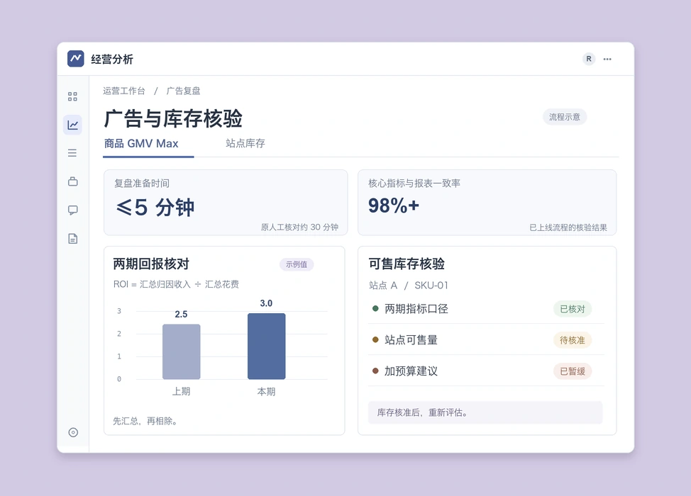
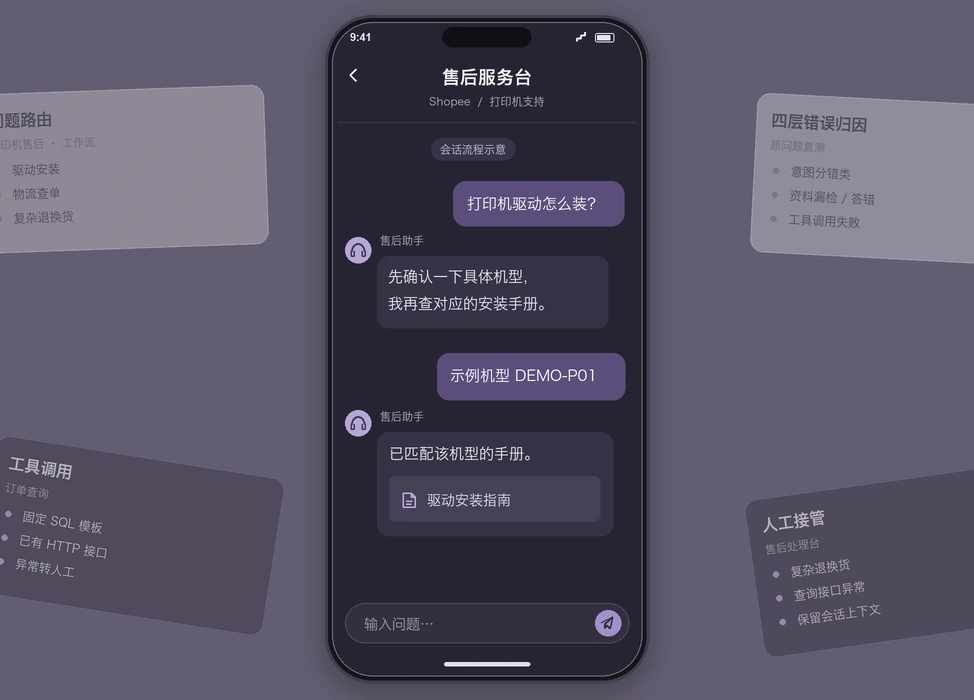
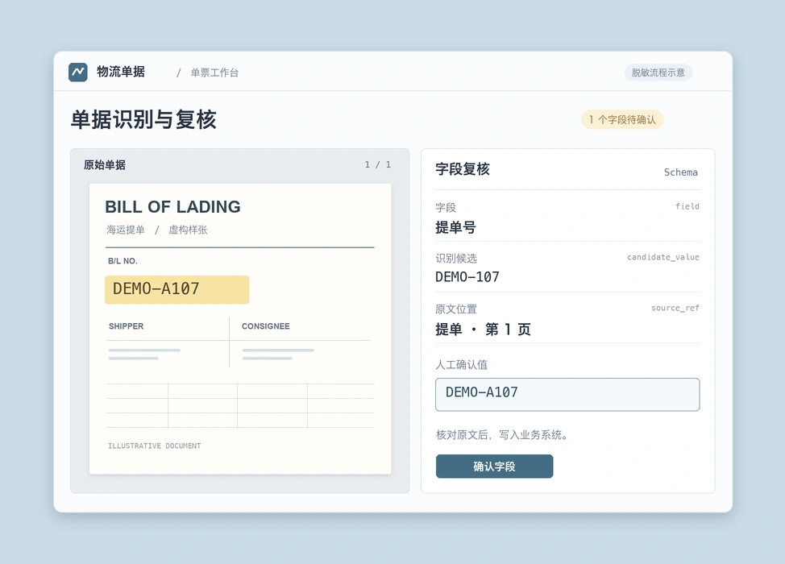
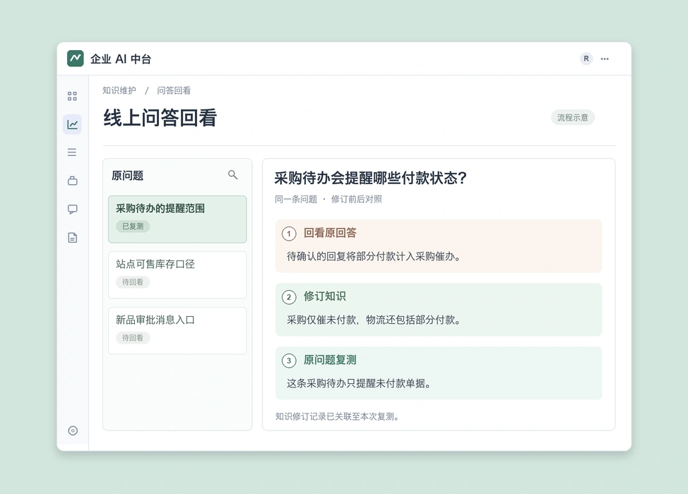

TikTok Shop · 广告与库存TikTok Shop · Ads & stock
把两期投放回报和站点可售库存放在一起看，复盘准备从约 30 分钟缩短到 5 分钟内。Bringing ad returns and sellable stock into one review cut preparation from about 30 minutes to under five.
欢迎进店逛逛，也可以直接看下面的作品。Step inside my little shop, or explore my work below.
先问清打印机型号，再查对应的驱动和手册。Confirm the printer model before finding its driver or manual.
真实历史工单是客服离线评测的样本来源。Historical support tickets form the offline evaluation set.
查物流状态优先调用已有接口，异常时转给人工。Use an existing service for live shipment status and hand exceptions to staff.
需要判责的退换货由人工客服接管。A person handles returns that require a judgment call.
存疑的提单号要回到原文逐字符核对。Verify uncertain bill numbers character by character against the source.
知识修订后，用同一个问题验证答案。Retest the exact question after updating the knowledge source.
分期 ROI 按汇总归因收入除以汇总花费计算。Period ROI is total attributed revenue divided by total spend.
上两层是我的工作物件，下面四份便当里装着项目。选一份打开看看。The top shelves hold tools from my work. Pick a bento below to open a case study.

把两期投放回报和站点可售库存放在一起看，复盘准备从约 30 分钟缩短到 5 分钟内。Bringing ad returns and sellable stock into one review cut preparation from about 30 minutes to under five.

用机型追问、固定查询和人工接管处理海外售后，高频标准咨询的自动解决率达到 50%+。Model-specific troubleshooting, fixed lookups and human handoff resolved 50%+ of common standard inquiries automatically.

让录单员对照原件确认存疑字段。核心字段识别准确率达 90%+，方案应用到 3 家外部企业。Clerks verify uncertain fields against the original. Core field accuracy reached 90%+, and three external clients adopted the product.

把问答记录、知识修订和原问题复测连在一起，单条错答的定位与验证从天级缩短到小时级。Linking answer history, knowledge edits and retesting shortened failure diagnosis and verification from days to hours.
项目索引Project index
关于About
我在深圳做 AI 产品。过去五年，我从码头、堆场和仓储系统做起，随后专注企业知识问答、多模态单据和跨境电商 Agent。I build AI products in Shenzhen. I started with terminal, yard and warehouse software, then moved into enterprise knowledge Q&A, multimodal documents and agents for cross-border commerce.
5 年产品经验，3 年专注 AI。汕头大学。Five years in product, three focused on AI. Shantou University.
下载两页简历Download my two-page résumé ↓2025.09 — 2026.10
负责跨境业务 AI，交付广告与库存决策 Agent、ERP 对话式通知中心和企业 AI 中台。Led AI for cross-border operations, delivering an advertising and inventory agent, conversational ERP notifications and an internal AI platform.
2024.09 — 2025.08
为东南亚 Shopee、Amazon 等海外渠道的 9 名客服交付打印机售后 Agent。Led the printer after-sales agent for a nine-person team serving Southeast Asian Shopee stores, Amazon and other overseas channels.
2021.08 — 2024.08
交付码头、堆场和仓储等供应链产品，2023 年 8 月转任 AI 产品经理，负责企业知识问答和多模态单据录入。Delivered logistics products for terminals, container yards and warehouses. Moved into AI product management in August 2023, leading enterprise Q&A and multimodal document intake.
2020.11 — 2021.05
参与企业服务产品的需求分析、业务流程梳理、需求文档与原型设计，协助跨团队推进项目。Contributed to requirements analysis, process mapping, product documentation and prototyping for enterprise services, and helped coordinate delivery across teams.
Dify 工作流、RAG、固定 SQL 与 HTTP 工具调用、MCP 授权、离线评测与原问题回归。Dify workflows, RAG, fixed SQL and HTTP tools, MCP permissions, offline evaluation and regression on original questions.
查看设计方法Explore my practice →实践Practice
做企业 AI 产品时，我先决定哪些判断可以交给模型，哪些必须查数据、执行规则或请人确认。In enterprise AI, I first decide which judgments a model can make and which need a lookup, a rule or a person.
先汇总归因收入和花费，再算两期各自的 ROI。库存按站点和 SKU 核验可售量。数据未核准时暂停加预算建议，由运营核准后再判断。Aggregate attributed sales and spend before calculating each period’s ROI. Verify sellable units by site and SKU and hold the recommendation until the operator can check them.
打开项目与原图See the project and exhibit →Dify 工作流先确认机型再检索手册。已入库的订单数据走固定 SQL，其他实时信息走已有 HTTP 接口。查单失败、复杂退换货转给人工。The Dify workflow confirms the model before retrieving its manual. Fixed SQL templates cover stored records and existing HTTP APIs supply live data. Failed lookups and complex returns go to staff.
打开项目与原图See the project and exhibit →从传统 OCR 和版式定位切换到多模态模型，以统一字段结构输出。录单员可直接对照来源位置修正存疑项，确认后再通过 API 写入业务系统。We moved from OCR and layout mapping to multimodal extraction into a shared schema. Clerks review uncertain values at their source before an API writes confirmed data.
打开项目与原图See the project and exhibit →拆分业务查询与开发配置入口。保留线上问答原文，维护人员可以修订知识并复测。MCP 工具按用户分发、动态收回，授权和分发过程均可回查。Separate the query experience from workflow configuration. Keep the original question for editors to retest after a correction. Grant and revoke MCP tools per user, with an audit trail.
打开项目与原图See the project and exhibit →写作Writing
TikTok Shop · 广告与库存TikTok Shop · Ads & stock
把两期投放回报和站点可售库存放在一起看，复盘准备从约 30 分钟缩短到 5 分钟内。Bringing ad returns and sellable stock into one review cut preparation from about 30 minutes to under five.
运营在广告、商品和库存三张报表之间来回切换。投放回报好，不代表对应站点还有货可卖。Operators checked three separate reports. Strong ad returns alone could not tell them whether the selling site had stock.
先汇总归因收入和花费，再算两期各自的 ROI。库存按站点和 SKU 核验可售量。数据未核准时暂停加预算建议，由运营核准后再判断。Aggregate attributed sales and spend before calculating each period’s ROI. Verify sellable units by site and SKU and hold the recommendation until the operator can check them.
回到对应站点和 SKU 核对可售量，核准后重新评估。Return to the site and SKU stock record. Reassess once it is verified.
结合两期回报和已核准的可售量，由运营决定是否加预算。The operator weighs period returns and verified stock before deciding whether to raise spend.
此图对应已上线的 TikTok Shop 流程。Shopee 的工作范围为按站点复盘 ROAS 的需求及口径梳理。This diagram shows the shipped TikTok Shop workflow. The Shopee work covered requirements and definitions for site-level ROAS reviews.
核心指标与底层报表核验一致率达 98%+，日常复盘采纳率 70%+。TikTok Shop 流程已上线，Shopee 部分完成了按站点复盘 ROAS 的口径梳理。Core metrics matched the source reports in 98%+ of checks, with 70%+ adoption in daily reviews. The TikTok Shop workflow shipped. The Shopee work defined site-level ROAS.
Shopee · 打印机售后Shopee · Printer support
用机型追问、固定查询和人工接管处理海外售后，高频标准咨询的自动解决率达到 50%+。Model-specific troubleshooting, fixed lookups and human handoff resolved 50%+ of common standard inquiries automatically.
9 名客服处理跨境打印机的驱动、物流和退换货问题。不同机型的安装步骤不一样，退货和退款又需要人工判责。Nine agents handled driver installation, delivery and returns. Installation steps varied by printer, and refund decisions needed a human owner.
Dify 工作流先确认机型再检索手册。已入库的订单数据走固定 SQL，其他实时信息走已有 HTTP 接口。查单失败、复杂退换货转给人工。The Dify workflow confirms the model before retrieving its manual. Fixed SQL templates cover stored records and existing HTTP APIs supply live data. Failed lookups and complex returns go to staff.
| 失败环节Stage | 工单现象 · 示意Illustrative symptom | 处理与复测Fix and retest |
|---|---|---|
| 分错类Routing | 买家问包裹到哪了，却收到驱动安装步骤。A shipment question is routed to driver installation. | 修订路由样例，复测后应进入查单流程。Update the routing examples and retest for order lookup. |
| 资料漏检Retrieval | 已知机型，检索结果里却没有该机型的手册。The model is known, but its manual is missing from retrieval. | 核对机型标签和手册收录，用原问题再查。Check model tags and manual coverage, then rerun the question. |
| 答错Generation | 找到了正确的手册，回复却漏掉安装步骤。The right manual was found, but the reply skips an installation step. | 对照原文修订回答，再核对步骤和顺序。Correct the answer against the manual and verify the steps in order. |
| 工具调用失败Tool call | 查询物流时，订单接口未返回结果。The order service returns no shipment result. | 转人工查单，避免回复未经确认的物流进度。Hand off the lookup to a person before reporting shipment status. |
评测使用 1,000+ 条真实历史工单。上表为重构示例。整体工单自动化闭环约 38%，分母包含需要人工处理的咨询。Evaluation used 1,000+ real historical tickets. The examples are reconstructed. End-to-end automation was about 38% across all tickets, including those requiring staff.
用 1,000+ 条历史工单评测，意图分流准确率由约 72% 提升到 90%+。全部工单中约 38% 自动闭环，常规咨询首次响应缩短至 10 秒内。On an evaluation set of 1,000+ historical tickets, intent routing improved from about 72% to 90%+. About 38% of all tickets closed automatically, and routine first responses took under ten seconds.
物流供应链 · 多模态单据Logistics · Document intake
让录单员对照原件确认存疑字段。核心字段识别准确率达 90%+，方案应用到 3 家外部企业。Clerks verify uncertain fields against the original. Core field accuracy reached 90%+, and three external clients adopted the product.
一票业务包含多份托书和提单，要核对 20–30 个字段。不同客户版式各异，盖章会遮住字符，提单号漏一个字母就会指向错误记录。A shipment involves multiple bookings and bills of lading with 20–30 key fields. Layouts and stamps vary, and one missing letter can change a bill number.
从传统 OCR 和版式定位切换到多模态模型，以统一字段结构输出。录单员可直接对照来源位置修正存疑项，确认后再通过 API 写入业务系统。We moved from OCR and layout mapping to multimodal extraction into a shared schema. Clerks review uncertain values at their source before an API writes confirmed data.
| 示意字段名Example field | 类型Type | 同一字段的示例值Example value |
|---|---|---|
candidate_value | 可空字符串Nullable text | DEMO-107 |
source_ref | 文本Text | 提单 · 第 1 页Bill of lading · page 1 |
review_status | 枚举Enum | 待复核 → 已确认Pending → confirmed |
confirmed_value | 可空字符串Nullable text | 空 → DEMO-A107Null → DEMO-A107 |
| 方案Approach | 处理方式与复核成本Extraction and review implications |
|---|---|
| 传统 OCRTraditional OCR | 读取页面文字，再按客户版式定位字段。版式或盖章位置变化时，要复核识别与映射。Read text, then map it using the customer's layout. Layout shifts and stamps require checking both recognition and mapping. |
| 多模态识别Multimodal extraction | 按统一字段结构抽取，不同版式共用复核流程。遇到缺字或错栏，核对原文后再写入。Extract against a common schema and reuse the review flow across layouts. Check missing characters or misplaced values before write-back. |
评测样本为 10 家客户的 150 份单据。图中字段名和编号用于说明复核流程，未使用客户原件或生产接口字段名。Evaluation used 150 documents from ten clients. Field names and the sample number illustrate the review process. No original customer document or production API field name is shown.
评测集覆盖 10 家客户的 150 份真实单据。单票录入及复核耗时下降约 57%，在 3 家外部客户完成商业化复用。The evaluation covered 150 real documents from ten clients. Entry and review time fell by about 57%, and the solution was commercially reused by three clients.
企业 AI 中台 · 问答评测Enterprise AI · Answer review
把问答记录、知识修订和原问题复测连在一起，单条错答的定位与验证从天级缩短到小时级。Linking answer history, knowledge edits and retesting shortened failure diagnosis and verification from days to hours.
运营要问数，开发要维护工作流，知识维护人员要追查错答。三类人关注的内容不同，线上问题却需要共同复现。Operators need answers, developers maintain workflows and knowledge editors investigate failures. They all need a reproducible record of the original question.
拆分业务查询与开发配置入口。保留线上问答原文，维护人员可以修订知识并复测。MCP 工具按用户分发、动态收回，授权和分发过程均可回查。Separate the query experience from workflow configuration. Keep the original question for editors to retest after a correction. Grant and revoke MCP tools per user, with an audit trail.
单条错答的定位与修复验证从天级缩短到小时级，维护效率提升 50%+。内部 MCP 工具全部纳入用户级授权和分发审计。Verification fell from days to hours, improving maintenance efficiency by 50%+. All internal MCP tools are covered by per-user authorization and distribution audits.
ERP 对话式规则引擎与通知中心Conversational ERP rules and notifications
业务人员说出提醒条件和接收人，确认模板后创建规则。定时任务负责扫描和发送。Staff describe the trigger and recipients, confirm the template and create a rule. A scheduled job scans records and sends the message.
业务人员说出提醒条件和接收人，确认模板后创建规则。定时任务负责扫描和发送。Staff describe the trigger and recipients, confirm the template and create a rule. A scheduled job scans records and sends the message.
新品审批附单号和 ERP 入口。采购仅催未付款，物流同时覆盖未付款与部分付款。New-product approvals include the record ID and ERP link. Procurement reminders cover unpaid items. Logistics also includes partially paid items.
规则配置和调整由 1–2 天缩短至 10 分钟内，关键节点提醒准确触达率 99%+。Rule creation and changes fell from 1–2 days to within ten minutes. Accurate delivery at key steps reached 99%+.
企业级多租户知识问答 RAGMulti-tenant enterprise knowledge Q&A
同一个操作问题，答案可能随客户、角色和软件版本而变。先限定检索范围，再生成回答。The right procedure depends on the client, user role and software version. Retrieval is scoped before an answer is generated.
同一个操作问题，答案可能随客户、角色和软件版本而变。先限定检索范围，再生成回答。The right procedure depends on the client, user role and software version. Retrieval is scoped before an answer is generated.
约 1,000 页业务文档按三类元数据过滤。遇到依据不足的提问转人工。About 1,000 pages of documentation are filtered by three metadata attributes. Staff take over when evidence is insufficient.
从检索、排序、知识内容与回答生成四处定位问题。修订后用原问题回归测试。Failures are traced to retrieval, ranking, knowledge content or generation. After a fix, the original question is tested again.
{{ tAgentKicker }}
{{ tAgentSubtitle }}
{{ tThinking }}
{{ tStarters }}